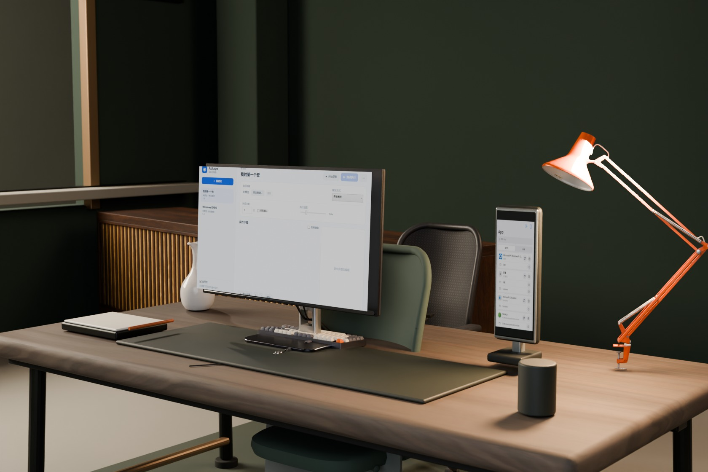
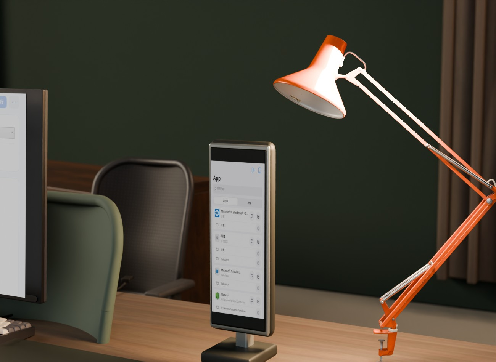
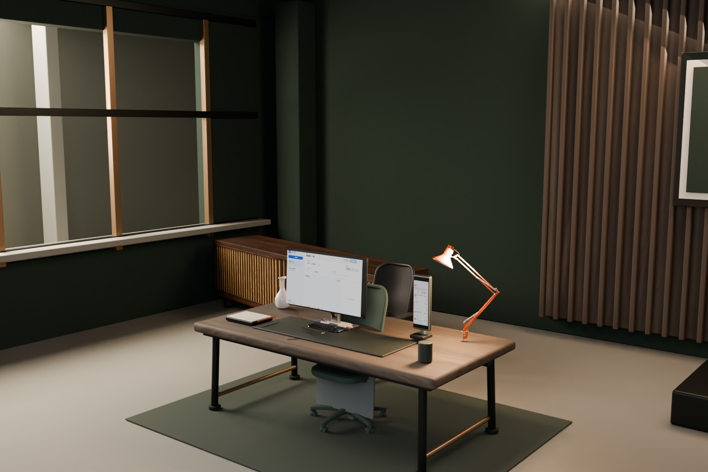

产品思考与独立创造。从问题出发，做出真实可用的数字产品。

跨平台桌面自动化 · 鼠标键盘宏

社区移植 · 竖屏远程工作空间

从原型到成品。走进工作室，自由观察创作工具、软件原型与作品档案。
从真实业务问题出发，让 AI 能力进入具体的任务与工作流程。
先动手做出能够运行的原型，再用真实使用体验检验产品判断。
AI 产品经理、产品思考者与独立创造者。关注数字工具、交互体验和从问题到成品的完整实践。